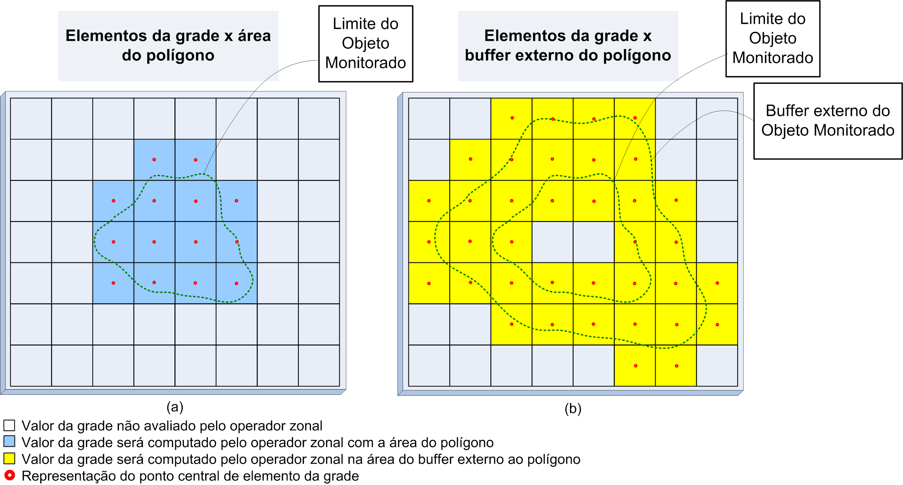
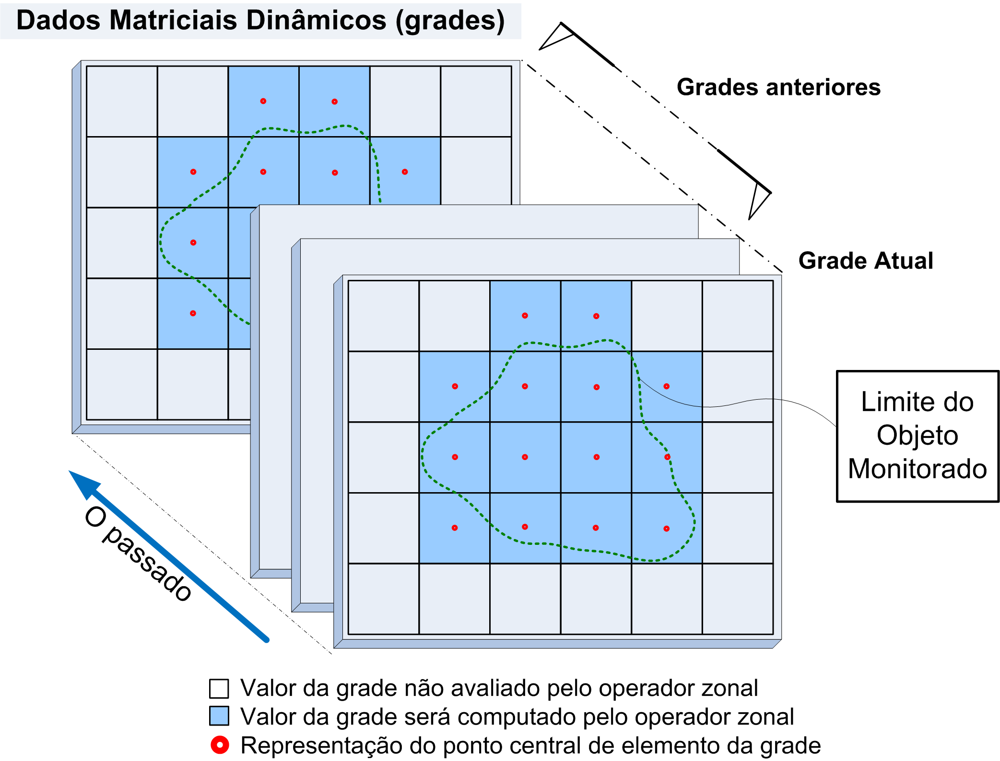
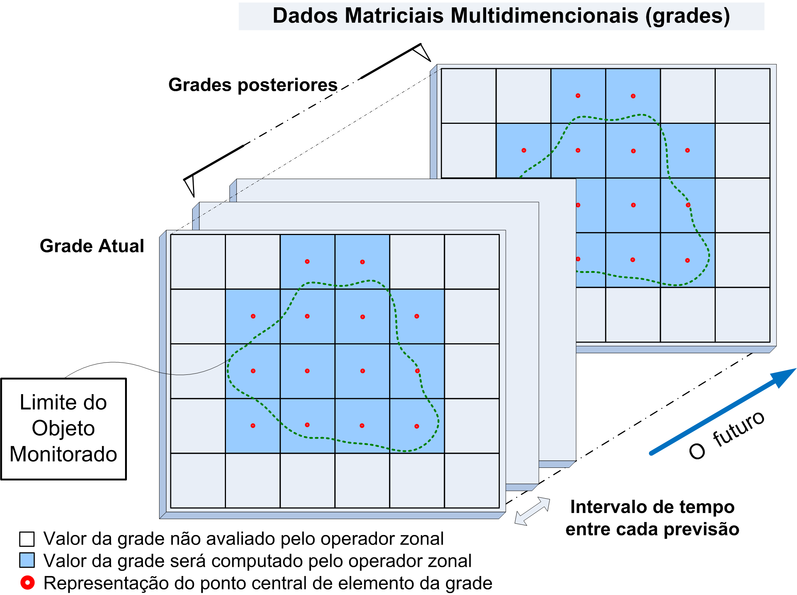

Operadores zonais de Grades
Operadores zonais de grades são operadores utilizados para obter estatísticas sobre as fontes de dados matriciais. Consideram os valores dos pontos da grade que interceptam todas as geometrias (pontos, linhas ou polígonos) de um mapa (objetos monitorados) ou a área de influência (buffer) dessas geometrias no tempo atual, passado ou futuro.
Tais operadores utilizam dados dinâmicos matriciais que foram coletados de fontes locais ou remotas, sejam dados de observação ou previsão, ou ainda de que foram produzidos por interpolação de PCDs ou uma análise baseada em grades.
A Figura 3.24a ilustra um polígono sobre um dado matricial e quais pontos (ou “pixels”) da grade serão considerados pelo operador zonal. Note que uma pequena interseção entre a área do “pixel” e a área do objeto fará com que o valor naquele ponto da grade seja considerado, não sendo necessário incluir o centro do mesmo. Para o mesmo polígono, considerando a área do buffer externo (Figura 3.24b), os pontos da grade que serão considerados são outros.
Os dados matriciais podem representar medidas do meio ambiente de um parâmetro, precipitação (chuva) por exemplo, que está sendo observado e neste caso são chamados de dados observacionais. Os operadores que trabalham sobre estes dados lidam com os valores atuais (ou mais recente) e seu histórico imediato. A Figura 3.25 mostra um conjunto de dados obtidos em diferentes horários até o mais recente, que são sobrepostos ao limite de um objeto que está sendo monitorado. Estes operadores estão identificados em grupos como “Zonal Histórico <sub_tipo>”. Normalmente cada dado (grade) está armazenado em um arquivo com data/hora em que foram coletadas as medidas.

Figura 3.24 – (a) Exemplo dos pontos de uma grade recuperados por um operador zonal que utiliza um polígono (b) Pontos de uma grade recuperados utilizando o buffer externo desse polígono.

Figura 3.25 – Dados históricos de observação sobrepostos ao objeto sob monitoramento.
De outra maneira, dados matriciais podem representar estimativas do meio ambiente de um parâmetro, precipitação (chuva) por exemplo, que está sendo estimada por meio de modelos matemáticos e neste caso são chamados de dados de previsão. Os operadores que trabalham sobre estes dados lidam com os valores atuais (ou mais recente) e seu futuro imediato. A Figura 3.26 mostra um conjunto de dados estimados para diferentes horários, da camada mais atual até um futuro mais recente, que são sobrepostos ao limite de um objeto que está sendo monitorado. Estes operadores estão identificados em grupos como “Zonal de Previsão <sub_tipo>”. Normalmente os diferentes horários de previsão (camadas) estão armazenados em um único arquivo com data/hora de referência de quando foi executado o modelo e qual é o intervalo de tempo entre cada camada.

Figura 3.26 – Dados históricos de observação sobrepostos ao objeto sob monitoramento.
Estes operadores zonais de grade são divididos em oito grupos: Zonal, Zonal Histórico, Zonal Histórico de Precipitação, Zonal Histórico Acumulado, Zonal Histórico por Intervalo, Zonal de Previsão, Zonal de Previsão Acumulado e Zonal de Previsão por Intervalo. A descrição de cada tipo a seguir.
1- Zonal
Grupo de operadores que consideram somente o último dado dinâmico matricial (ou mais atual) que intercepta o objeto monitorado ou sua área de influência (buffer).
SINTAXE GERAL:
grid.zonal.<operator>(“<dynamic_data_grid>”, <value>, <begin>, <end>, [<band>], [<buffer>])
onde:
- operator: count, count_by_value, count_by_range, sum, mean, min, max, median, standard_deviation, variance;
- dynamic_data_grid: String com o nome da série de dados matriciais de observação.
- value: Valor a ser contado. Utilizado por exemplo para contar classes de um mapa temático matricial (matriz de números inteiros). Utilizado somente para operador “count_by_value”.
- begin, end: Valor inicial e final do intervalo utilizado para contar “pixels”. Utilizado por exemplo para contar pixels dentro de um intervalo de um dado matricial (matriz de reais). Utilizado somente para operador “count_by_range”.
- band: [Opcional] Banda da grade ser utilizada. Parâmetro obrigatório somente se o parâmetro seguinte (buffer) for utilizado. Se não informado será considerado a primeira banda (0).
- buffer: [Opcional] Buffer para ser aplicado ao objeto monitorado. Parâmetro não obrigatório. Ver utilitário Buffer.
Segue a descrição de cada operador.
Zonal: Contagem
Retorna a quantidade de “pixels” da última matriz (ou mais atual) que interceptam o objeto monitorado ou sua área de influência (buffer).
Sintaxe:
grid.zonal.count("<dynamic_data_grid>", [<band>], [<buffer>])
Exemplo: buf1 = Buffer()
x = grid.zonal.count("hidro", 0, buf1)
Zonal: Contagem por Valor
Retorna a quantidade de “pixels” de um determinado valor da última matriz (ou mais atual) que interceptam o objeto monitorado ou sua área de influência (buffer).
Sintaxe:
grid.zonal.count_by_value("<dynamic_data_grid>", <value>, [<band>], [<buffer>])
Exemplo: # conta valores 5 da primeira camada do dado matricial sobre o buffer do objeto
buf1 = Buffer(BufferType.Level, 400, "m", 200, "m")
x = grid.zonal.count_by_value("uso_solo", 5, 0, buf1)
# conta valores 3 da segunda camada do dado matricial sem buffer do objeto
x = grid.zonal.count_by_value("uso_solo", 3, 1)
# conta valores 12 da primeira camada do dado matricial sem buffer do objeto
buf1 = Buffer()
x = grid.zonal.count_by_value("uso_solo", 12, 0, buf1)
# ou
x = grid.zonal.count_by_value("uso_solo", 12)
Zonal: Contagem por intervalo
Retorna a quantidade de “pixels” dentro de um determinado intervalo de valores da última matriz (ou mais atual) que interceptam o objeto monitorado ou sua área de influência (buffer).
Sintaxe:
grid.zonal.count_by_range("<dynamic_data_grid>", <begin>, <end>, [<band>], [<buffer>])
Exemplo: # conta valores entre 10.5 e 35 da primeira camada do dado matricial sobre o buffer do objeto
buf1 = Buffer(BufferType.Level, 400, "m", 200, "m")
x = grid.zonal.count_by_range("prec", 10.5, 35, 0, buf1)
# conta valores entre 200 e 1200 da primeira camada do dado matricial sem buffer do objeto
buf1 = Buffer()
x = grid.zonal.count_by_value("prec", 200, 1200, 0, buf1)
# ou
x = grid.zonal.count_by_value("prec", 200, 1200)
Zonal: Soma
Retorna a soma dos valores dentre os “pixels” da última matriz (ou mais atual) que interceptam o objeto monitorado ou sua área de influência (buffer).
Sintaxe:
grid.zonal.sum("<dynamic_data_grid>", [<band>], [<buffer>])
Exemplo: x = grid.zonal.sum("hidro", 0)
# ou
x = grid.zonal.sum("hidro")
Zonal: Média
Retorna a média dos valores dentre os “pixels” da última matriz (ou mais atual) que interceptam o objeto monitorado ou sua área de influência (buffer).
Sintaxe:
grid.zonal.mean("<dynamic_data_grid>", [<band>], [<buffer>])
Exemplo: b1 = Buffer(BufferType.Level, 10, "km", 5, "km")
x = grid.zonal.mean("hidro", 0, b1)
Zonal: Mínimo
Retorna o menor valor dentre os “pixels” da última matriz (ou mais atual) que interceptam o objeto monitorado ou sua área de influência (buffer).
Sintaxe:
grid.zonal.min("<dynamic_data_grid>", [<band>], [<buffer>])
Exemplo: b1 = Buffer(BufferType.Out_union, 2, "km")
x = grid.zonal.min("hidro", 0, b1)
Zonal: Máximo
Retorna o maior valor dentre os “pixels” da última matriz (ou mais atual) que interceptam o objeto monitorado ou sua área de influência (buffer).
Sintaxe:
grid.zonal.max("<dynamic_data_grid>", [<band>], [<buffer>])
Exemplo: b1 = Buffer(BufferType.Out, 400, "m")
x = grid.zonal.max("hidro", 0, b1)
Zonal: Mediana
Retorna a mediana dos valores dentre os “pixels” da última matriz (ou mais atual) que interceptam o objeto monitorado ou sua área de influência (buffer).
Sintaxe:
grid.zonal.median("<dynamic_data_grid>", [<band>], [<buffer>])
Exemplo: b1 = Buffer(BufferType.Out, 800, "m")
x = grid.zonal.median("radar", 0, b1)
Zonal: Desvio Padrão
Retorna o desvio padrão dos valores dentre os “pixels” da última matriz (ou mais atual) que interceptam o objeto monitorado ou sua área de influência (buffer).
Sintaxe:
grid.zonal.standard_deviation("<dynamic_data_grid>", [<band>], [<buffer>])
Exemplo: b1 = Buffer(BufferType.Out, 800, "m")
x = grid.zonal.standard_deviation("radar", 0, b1)
Zonal: Variância
Retorna a variância dos valores dentre os “pixels” da última matriz (ou mais atual) que interceptam o objeto monitorado ou sua área de influência (buffer).
Sintaxe:
grid.zonal.variance("<dynamic_data_grid>", [<band>], [<buffer>])
Exemplo: b1 = Buffer(BufferType.In_diff, 800, "m")
x = grid.zonal.variance("grade_chuva", 0, b1)
2- Zonal Histórico
Grupo de operadores que consideram os últimos dados dinâmicos matriciais que interceptam o objeto monitorado ou sua área de influência (buffer) no intervalo de tempo definido entre a data/hora atual e o valor de tempo informado no passado.
SINTAXE GERAL:
grid.zonal.history.<operator>("<dynamic_data_grid>", "<time>", [<band>], [<buffer>])
onde:
- operator: num, list, sum, mean, min, max, median, standard_deviation, variance;
- dynamic_data_grid: String com o nome da série de dados matriciais de observação;
- time: String com o intervalo de tempo, a partir da hora atual, para filtrar as grades. Este intervalo será aberto (< x) no valor informado e fechado ( = ) na hora atual. Ver utilitário unidades de tempo;
- band: [Opcional] Banda da grade ser utilizada. Parâmetro obrigatório somente se o parâmetro seguinte (buffer) for utilizado. Se não informado será considerado a primeira banda (0). Não utilizar com operador “num e list”;
- buffer: [Opcional] Buffer para ser aplicado ao objeto monitorado. Parâmetro não obrigatório. Ver utilitário Buffer.
Segue a descrição de cada operador.
Zonal Histórico: Número
Retorna o número de matrizes que interceptam o objeto monitorado ou sua área de influência (buffer) no intervalo de tempo definido entre a data/hora atual e o valor de tempo informado no passado.
Sintaxe:
grid.zonal.history.num("<dynamic_data_grid>", "<time>", [<buffer>])
Exemplo: buf1 = Buffer()
x = grid.zonal.history.num("hidro", "12h", buf1)
Zonal Histórico: Lista
Retorna a lista com data/hora das matrizes que interceptam o objeto monitorado ou sua área de influência (buffer) no intervalo de tempo definido entre a data/hora atual e o valor de tempo informado no passado.
Sintaxe:
grid.zonal.history.list("<dynamic_data_grid>", "<time>", [<buffer>])
Exemplo: buf1 = Buffer()
x = grid.zonal.history.list("hidro", "12h", buf1)
Zonal Histórico: Soma
Retorna a soma dos valores dentre os pixels de todas as matrizes que interceptam o objeto monitorado ou sua área de influência (buffer) no intervalo de tempo definido entre a data/hora atual e o valor de tempo informado no passado.
Sintaxe:
grid.zonal.history.sum("<dynamic_data_grid>", "<time>", [<band>], [<buffer>])
Exemplo: x = grid.zonal.history.sum("hidro", "12h", 0)
Zonal Histórico: Média
Retorna a média dos valores dentre os pixels de todas as matrizes que interceptam o objeto monitorado ou sua área de influência (buffer) no intervalo de tempo definido entre a data/hora atual e o valor de tempo informado no passado.
Sintaxe:
grid.zonal.history.mean("<dynamic_data_grid>", "<time>", [<band>], [<buffer>])
Exemplo: b1 = Buffer(BufferType.Level, 10, "km", 5, "km")
x = grid.zonal.history.mean("hidro", "12h", 0, b1)
Zonal Histórico: Mínimo
Retorna o menor valor dentre os pixels de todas as matrizes que interceptam o objeto monitorado ou sua área de influência (buffer) no intervalo de tempo definido entre a data/hora atual e o valor de tempo informado no passado.
Sintaxe:
grid.zonal.history.min("<dynamic_data_grid>", "<time>", [<band>], [<buffer>])
Exemplo: b1 = Buffer(BufferType.Out_union, 2, "km")
x = grid.zonal.history.min("hidro", "12h", 0, b1)
Zonal Histórico: Máximo
Retorna o maior valor dentre os pixels de todas as matrizes que interceptam o objeto monitorado ou sua área de influência (buffer) no intervalo de tempo definido entre a data/hora atual e o valor de tempo informado no passado.
Sintaxe:
grid.zonal.history.max("<dynamic_data_grid>", "<time>", [<band>], [<buffer>])
Exemplo: b1 = Buffer(BufferType.Out, 400, "m")
x = grid.zonal.history.max("hidro", "12h", 0, b1)
Zonal Histórico: Mediana
Retorna a mediana dos valores dentre os pixels de todas as matrizes que interceptam o objeto monitorado ou sua área de influência (buffer) no intervalo de tempo definido entre a data/hora atual e o valor de tempo informado no passado.
Sintaxe:
grid.zonal.history.median("<dynamic_data_grid>", "<time>", [<band>], [<buffer>])
Exemplo: b1 = Buffer(BufferType.Out, 800, "m")
x = grid.zonal.history.median("radar", "12h", 0, b1)
Zonal Histórico: Desvio Padrão
Retorna o desvio padrão dos valores dentre os pixels de todas as matrizes que interceptam o objeto monitorado ou sua área de influência (buffer) no intervalo de tempo definido entre a data/hora atual e o valor de tempo informado no passado.
Sintaxe:
grid.zonal.history.standard_deviation("<dynamic_data_grid>", "<time>", [<band>], [<buffer>])
Exemplo: b1 = Buffer(BufferType.Out, 800, "m")
x = grid.zonal.history.standard_deviation("radar", "12h", 0, b1)
Zonal Histórico: Variância
Retorna a variância dos valores dentre os pixels de todas as matrizes que interceptam o objeto monitorado ou sua área de influência (buffer) no intervalo de tempo definido entre a data/hora atual e o valor de tempo informado no passado.
Sintaxe:
grid.zonal.history.variance("<dynamic_data_grid>", "<time>", [<band>], [<buffer>])
Exemplo: b1 = Buffer(BufferType.In_diff, 800, "m")
x = grid.zonal.history.variance("grade_chuva", "12h", 0, b1)
3- Zonal Histórico de Precipitação
Grupo de operadores que consideram os últimos dados dinâmicos matriciais (em mm/h de precipitação) que interceptam o objeto monitorado ou sua área de influência (buffer) no intervalo de tempo definido entre a data/hora atual e o valor de tempo informado no passado.
SINTAXE GERAL:
grid.zonal.history.prec.<operator>("<dynamic_data_grid>", "<time>", <band>, <buffer>)
onde:
- operator: sum, mean, median, min, max, standard_deviation, variance;
- dynamic_data_grid: String com o nome da série de dados matriciais de observação.
- time: String com o intervalo de tempo, a partir da hora atual, para filtrar as grades. Este intervalo será aberto (< x) no valor informado e fechado ( = ) na hora atual. Ver utilitário unidades de tempo;
- band: [Opcional] Banda da grade ser utilizada. Parâmetro obrigatório somente se o parâmetro seguinte (buffer) for utilizado. Se não informado será considerado a primeira banda (0).
- buffer: [Opcional] Buffer para ser aplicado ao objeto monitorado. Parâmetro não obrigatório. Ver utilitário Buffer.
Segue a descrição de cada operador.
Zonal Histórico de Precipitação: Soma
Retorna a soma dos valores dos últimos dados dinâmicos matriciais (em mm/h de precipitação) que interceptam o objeto monitorado ou sua área de influência (buffer) no intervalo de tempo definido entre a data/hora atual e o valor de tempo informado no passado.
Sintaxe:
grid.zonal.history.prec.sum("<dynamic_data_grid>", "<time>", [<band>], [<buffer>])
Exemplo: x = grid.zonal.history.prec.sum("hidro", "12h")
Zonal Histórico de Precipitação: Média
Retorna a média dos valores dos últimos dados dinâmicos matriciais (em mm/h de precipitação) que interceptam o objeto monitorado ou sua área de influência (buffer) no intervalo de tempo definido entre a data/hora atual e o valor de tempo informado no passado.
Sintaxe:
grid.zonal.history.prec.mean("<dynamic_data_grid>", "<time>", [<band>], [<buffer>])
Exemplo: b1 = Buffer(BufferType.Level, 10, "km", 5, "km")
x = grid.zonal.history.prec.mean("hidro", "12h", 0, b1)
Zonal Histórico de Precipitação: Mínimo
Retorna o menor valor dos últimos dados dinâmicos matriciais (em mm/h de precipitação) que interceptam o objeto monitorado ou sua área de influência (buffer) no intervalo de tempo definido entre a data/hora atual e o valor de tempo informado no passado.
Sintaxe:
grid.zonal.history.prec.min("<dynamic_data_grid>", "<time>", [<band>], [<buffer>])
Exemplo: b1 = Buffer(BufferType.Out_union, 2, "km")
x = grid.zonal.history.prec.min("hidro", "12h", 0, b1)
Zonal Histórico de Precipitação: Máximo
Retorna o maior valor dos últimos dados dinâmicos matriciais (em mm/h de precipitação) que interceptam o objeto monitorado ou sua área de influência (buffer) no intervalo de tempo definido entre a data/hora atual e o valor de tempo informado no passado.
Sintaxe:
grid.zonal.history.prec.max("<dynamic_data_grid>", "<time>", [<band>], [<buffer>])
Exemplo: b1 = Buffer(BufferType.Out, 400, "m")
x = grid.zonal.history.prec.max("hidro", "12h", 0, b1)
Zonal Histórico de Precipitação: Mediana
Retorna a mediana dos valores dos últimos dados dinâmicos matriciais (em mm/h de precipitação) que interceptam o objeto monitorado ou sua área de influência (buffer) no intervalo de tempo definido entre a data/hora atual e o valor de tempo informado no passado.
Sintaxe:
grid.zonal.history.prec.median("<dynamic_data_grid>", "<time>", [<band>], [<buffer>])
Exemplo: b1 = Buffer(BufferType.Out, 800, "m")
x = grid.zonal.history.prec.median("radar", "12h", 0, b1)
Zonal Histórico de Precipitação: Desvio Padrão
Retorna o desvio padrão dos valores dos últimos dados dinâmicos matriciais (em mm/h de precipitação) que interceptam o objeto monitorado ou sua área de influência (buffer) no intervalo de tempo definido entre a data/hora atual e o valor de tempo informado no passado.
Sintaxe:
grid.zonal.history.prec.standard_deviation("<dynamic_data_grid>", "<time>", [<band>], [<buffer>])
Exemplo: b1 = Buffer(BufferType.Out, 800, "m")
x = grid.zonal.history.prec.standard_deviation("radar", "12h", 0, b1)
Zonal Histórico de Precipitação: Variância
Retorna a variância dos valores dos últimos dados dinâmicos matriciais (em mm/h de precipitação) que interceptam o objeto monitorado ou sua área de influência (buffer) no intervalo de tempo definido entre a data/hora atual e o valor de tempo informado no passado.
Sintaxe:
grid.zonal.history.prec.variance("<dynamic_data_grid>", "<time>", [<band>], [<buffer>])
Exemplo: b1 = Buffer(BufferType.In_diff, 800, "m")
x = grid.zonal.history.prec.variance("grade_chuva", "12h", 0, b1)
4- Zonal Histórico Acumulado
Grupo de operadores que consideram valores acumulados dos últimos dados dinâmicos matriciais que interceptam o objeto monitorado ou sua área de influência (buffer) no intervalo de tempo definido entre a data/hora atual e o valor de tempo informado no passado. Primeiro é realizada a operação de soma dos pontos da matriz no intervalo de tempo para depois realizar a operação zonal.
SINTAXE GERAL:
grid.zonal.history.accum.<operator>("<dynamic_data_grid>", "<time>", <band>, <buffer>)
onde:
- operator: sum, mean, min, max, median, standard_deviation, variance;
- dynamic_data_grid: String com o nome da série de dados matriciais de observação;
- time: String com o intervalo de tempo, a partir da hora atual, para filtrar as grades. Este intervalo será aberto (< x) no valor informado e fechado ( = ) na hora atual. Ver utilitário unidades de tempo;
- band: [Opcional] Banda da grade ser utilizada. Parâmetro obrigatório somente se o parâmetro seguinte (buffer) for utilizado. Se não informado será considerado a primeira banda (0).
- buffer: [Opcional] Buffer para ser aplicado ao objeto monitorado. Parâmetro não obrigatório. Ver utilitário Buffer.
Segue a descrição de cada operador.
Zonal Histórico Acumulado: Soma
Retorna a soma da soma acumulada dos últimos dados dinâmicos matriciais que interceptam o objeto monitorado ou sua área de influência (buffer) no intervalo de tempo definido entre a data/hora atual e o valor de tempo informado no passado.
Sintaxe:
grid.zonal.history.accum.sum("<dynamic_data_grid>", "<time>", [<band>], [<buffer>])
Exemplo: x = grid.zonal.history.accum.sum("hidro", "12h")
Zonal Histórico Acumulado: Média
Retorna a média da soma acumulada dos últimos dados dinâmicos matriciais que interceptam o objeto monitorado ou sua área de influência (buffer) no intervalo de tempo definido entre a data/hora atual e o valor de tempo informado no passado.
Sintaxe:
grid.zonal.history.accum.mean("<dynamic_data_grid>", "<time>", [<band>], [<buffer>])
Exemplo: b1 = Buffer(BufferType.Level, 10, "km", 5, "km")
x = grid.zonal.history.accum.mean("hidro", "12h", 0, b1)
Zonal Histórico Acumulado: Mínimo
Retorna a menor soma acumulada dos últimos dados dinâmicos matriciais que interceptam o objeto monitorado ou sua área de influência (buffer) no intervalo de tempo definido entre a data/hora atual e o valor de tempo informado no passado.
Sintaxe:
grid.zonal.history.accum.min("<dynamic_data_grid>", "<time>", [<band>], [<buffer>])
Exemplo: b1 = Buffer(BufferType.Out_union, 2, "km")
x = grid.zonal.history.accum.min("hidro", "12h", 0, b1)
Zonal Histórico Acumulado: Máximo
Retorna a maior soma acumulada dos últimos dados dinâmicos matriciais que interceptam o objeto monitorado ou sua área de influência (buffer) no intervalo de tempo definido entre a data/hora atual e o valor de tempo informado no passado.
Sintaxe:
grid.zonal.history.accum.max("<dynamic_data_grid>", "<time>", [<band>], [<buffer>])
Exemplo: b1 = Buffer(BufferType.Out, 400, "m")
x = grid.zonal.history.accum.max("hidro", "12h", 0, b1)
Zonal Histórico Acumulado: Mediana
Retorna a mediana da soma acumulada dos últimos dados dinâmicos matriciais que interceptam o objeto monitorado ou sua área de influência (buffer) no intervalo de tempo definido entre a data/hora atual e o valor de tempo informado no passado.
Sintaxe:
grid.zonal.history.accum.median("<dynamic_data_grid>", "<time>", [<band>], [<buffer>])
Exemplo: b1 = Buffer(BufferType.Out, 800, "m")
x = grid.zonal.history.accum.median("radar", "12h", 0, b1)
Zonal Histórico Acumulado: Desvio Padrão
Retorna o desvio padrão da soma acumulada dos últimos dados dinâmicos matriciais que interceptam o objeto monitorado ou sua área de influência (buffer) no intervalo de tempo definido entre a data/hora atual e o valor de tempo informado no passado.
Sintaxe:
grid.zonal.history.accum.standard_deviation("<dynamic_data_grid>", "<time>", [<band>], [<buffer>])
Exemplo: b1 = Buffer(BufferType.Out, 800, "m")
x = grid.zonal.history.accum.standard_deviation("radar", "12h", 0, b1)
Zonal Histórico Acumulado: Variância
Retorna a variância da soma acumulada dos últimos dados dinâmicos matriciais que interceptam o objeto monitorado ou sua área de influência (buffer) no intervalo de tempo definido entre a data/hora atual e o valor de tempo informado no passado.
Sintaxe:
grid.zonal.history.accum.variance("<dynamic_data_grid>", "<time>", [<band>], [<buffer>])
Exemplo: b1 = Buffer(BufferType.In_diff, 800, "m")
x = grid.zonal.history.accum.variance("grade_chuva", "12h", 0, b1)
5- Zonal Histórico por Intervalo
Grupo de operadores que consideram intervalo de tempo de valores dos últimos dados dinâmicos matriciais que interceptam o objeto monitorado ou sua área de influência (buffer) no intervalo de tempo inicial e final informado no passado em função da data/hora atual.
SINTAXE GERAL:
grid.zonal.history.interval.<operator>("<dynamic_data_grid>", "<time_begin>", "<time_end>", <band>, <buffer>)
onde:
- operator: num, list, sum, mean, min, max, median, standard_deviation, variance;
- dynamic_data_grid: String com o nome da série de dados matriciais;
- time_begin : String inicial (mais antigo) do intervalo de tempo para filtrar as grades. Este valor será aberto (< tempo mais antigo) no tempo informado;
- time_end: String final (mais recente) do intervalo de tempo para filtrar as grades. Este valor será fechado ( <= tempo mais recente) no tempo informado;
- band: [Opcional] Banda da grade ser utilizada. Parâmetro obrigatório somente se o parâmetro seguinte (buffer) for utilizado. Se não informado será considerado a primeira banda (0);
- buffer: [Opcional] Buffer para ser aplicado ao objeto monitorado. Parâmetro não obrigatório. Ver utilitário Buffer.
Segue a descrição de cada operador.
Zonal Histórico por Intervalo: Número
Retorna o número de matrizes no intervalo de tempo que interceptam o objeto monitorado ou sua área de influência (buffer) no intervalo de tempo inicial e final informado no passado em função da data/hora atual.
Sintaxe:
grid.zonal.history.interval.num("<dynamic_data_grid>", "<time_begin>", "<time_end>", [<buffer>])
Exemplo: buf1 = Buffer()
x = grid.zonal.history.interval.num("hidro", "12h", "2h", buf1)
Zonal Histórico por Intervalo: Lista
Retorna a lista com data/hora das matrizes no intervalo de tempo que interceptam o objeto monitorado ou sua área de influência (buffer) no intervalo de tempo inicial e final informado no passado em função da data/hora atual.
Sintaxe:
grid.zonal.history.interval.list("<dynamic_data_grid>", "<time_begin>", "<time_end>", [<buffer>])
Exemplo: buf1 = Buffer()
x = grid.zonal.history.interval.list("hidro", "12h", "2h", buf1)
Zonal Histórico por Intervalo: Soma
Retorna a soma dos valores dentre os pixels, no intervalo de tempo, das matrizes que interceptam o objeto monitorado ou sua área de influência (buffer) no intervalo de tempo inicial e final informado no passado em função da data/hora atual.
Sintaxe:
grid.zonal.history.interval.sum("<dynamic_data_grid>", "<time_begin>", "<time_end>", [<band>], [<buffer>])
Exemplo: x = grid.zonal.history.interval.sum("hidro", "12h", "2h", 0)
Zonal Histórico por Intervalo: Média
Retorna a média dos valores dentre os pixels, no intervalo de tempo, das matrizes que interceptam o objeto monitorado ou sua área de influência (buffer) no intervalo de tempo inicial e final informado no passado em função da data/hora atual.
Sintaxe:
grid.zonal.history.interval.mean("<dynamic_data_grid>", "<time_begin>", "<time_end>", [<band>], [<buffer>])
Exemplo: b1 = Buffer(BufferType.Level, 10, "km", 5, "km")
x = grid.zonal.history.interval.mean("hidro", "12h", "2h", 0, b1)
Zonal Histórico por Intervalo: Mínimo
Retorna o menor valor dentre os pixels, no intervalo de tempo, das matrizes que interceptam o objeto monitorado ou sua área de influência (buffer) no intervalo de tempo inicial e final informado no passado em função da data/hora atual.
Sintaxe:
grid.zonal.history.interval.min("<dynamic_data_grid>", "<time_begin>", "<time_end>", [<band>], [<buffer>])
Exemplo: b1 = Buffer(BufferType.Out_union, 2, "km")
x = grid.zonal.history.interval.min("hidro", "12h", "2h", 0, b1)
Zonal Histórico por Intervalo: Máximo
Retorna o maior valor dentre os pixels, no intervalo de tempo, das matrizes que interceptam o objeto monitorado ou sua área de influência (buffer) no intervalo de tempo inicial e final informado no passado em função da data/hora atual.
Sintaxe:
grid.zonal.history.interval.max("<dynamic_data_grid>", "<time_begin>", "<time_end>", [<band>], [<buffer>])
Exemplo: b1 = Buffer(BufferType.Out, 400, "m")
x = grid.zonal.history.interval.min("hidro", "12h", "2h", 0, b1)
Zonal Histórico por Intervalo: Mediana
Retorna a mediana dos valores dentre os pixels, no intervalo de tempo, das matrizes que interceptam o objeto monitorado ou sua área de influência (buffer) no intervalo de tempo inicial e final informado no passado em função da data/hora atual.
Sintaxe:
grid.zonal.history.interval.median("<dynamic_data_grid>", "<time_begin>", "<time_end>", [<band>], [<buffer>])
Exemplo: b1 = Buffer(BufferType.Out, 800, "m")
x = grid.zonal.history.interval.median("radar", "12h", "2h", 0, b1)
Zonal Histórico por Intervalo: Desvio Padrão
Retorna o desvio padrão dos valores dentre os pixels, no intervalo de tempo, das matrizes que interceptam o objeto monitorado ou sua área de influência (buffer) no intervalo de tempo inicial e final informado no passado em função da data/hora atual.
Sintaxe:
grid.zonal.history.interval.standard_deviation("<dynamic_data_grid>", "<time_begin>", "<time_end>", [<band>], [<buffer>])
Exemplo: b1 = Buffer(BufferType.Out, 800, "m")
x = grid.zonal.history.interval.standard_deviation("radar", "12h", "2h", 0, b1)
Zonal Histórico por Intervalo: Variância
Retorna a variância dos valores dentre os pixels, no intervalo de tempo, das matrizes que interceptam o objeto monitorado ou sua área de influência (buffer) no intervalo de tempo inicial e final informado no passado em função da data/hora atual.
Sintaxe:
grid.zonal.history.interval.variance("<dynamic_data_grid>", "<time_begin>", "<time_end>", [<band>], [<buffer>])
Exemplo: b1 = Buffer(BufferType.In_diff, 800, "m")
x = grid.zonal.history.interval.variance("grade_chuva", "12h", "2h", 0, b1)
6- Zonal de Previsão
Grupo de operadores que consideram as próximas camadas de dados dinâmicos matriciais de previsão que interceptam o objeto monitorado ou sua área de influência (buffer) no intervalo de tempo definido entre a data/hora atual e o valor de tempo informado no futuro.
SINTAXE GERAL:
grid.zonal.forecast.<operator>("<dynamic_data_grid>", "<time>", [<buffer>])
onde:
- operator: num, list, sum, mean, min, max, median, standard_deviation, variance;
- dynamic_data_grid: String com o nome da série de dados matriciais de previsão;
- time: String com o intervalo de tempo, a partir da hora atual para o futuro, para filtrar as camadas de previsão. Ver utilitário Unidades de tempo;
- buffer: [Opcional] Objeto Buffer para ser aplicado ao objeto monitorado. Ver utilitário Buffer. Não obrigatório. Não utilizar com operador “num e list”.
Segue a descrição de cada operador.
Zonal de Previsão: Número
Retorna o número de camadas de previsão que interceptam o objeto monitorado ou sua área de influência (buffer) no intervalo de tempo definido entre a data/hora atual e o valor de tempo informado no futuro.
Sintaxe:
grid.zonal.forecast.num("<dynamic_data_grid>", "<time>", [<buffer>])
Exemplo: b1 = Buffer()
x = grid.zonal.forecast.num(“Eta15km", “12h”, b1)
Zonal de Previsão: Lista
Retorna a lista com data/hora das camadas de previsão que interceptam o objeto monitorado ou sua área de influência (buffer) no intervalo de tempo definido entre a data/hora atual e o valor de tempo informado no futuro.
Sintaxe:
grid.zonal.forecast.list("<dynamic_data_grid>", "<time>", [<buffer>])
Exemplo: b1 = Buffer()
x = grid.zonal.forecast.list("Eta15km", "12h", b1)
Zonal de Previsão: Soma
Retorna a soma dos valores dentre os pixels das camadas de previsão que interceptam o objeto monitorado ou sua área de influência (buffer) no intervalo de tempo definido entre a data/hora atual e o valor de tempo informado no futuro.
Sintaxe:
grid.zonal.forecast.sum("<dynamic_data_grid>", "<time>", [<buffer>])
Exemplo: x = grid.zonal.forecast.sum("Eta15km", "12h")
Zonal de Previsão: Média
Retorna a média dos valores dentre os pixels das camadas de previsão que interceptam o objeto monitorado ou sua área de influência (buffer) no intervalo de tempo definido entre a data/hora atual e o valor de tempo informado no futuro.
Sintaxe:
grid.zonal.forecast.median("<dynamic_data_grid>", "<time>", [<buffer>])
Exemplo: b1 = Buffer(BufferType.Level, 10, "km", 5, "km")
x = grid.zonal.forecast.mean("Eta15km", "12h", b1)
Zonal de Previsão: Mínimo
Retorna o menor valor dentre os pixels das camadas de previsão que interceptam o objeto monitorado ou sua área de influência (buffer) no intervalo de tempo definido entre a data/hora atual e o valor de tempo informado no futuro.
Sintaxe:
grid.zonal.forecast.min("<dynamic_data_grid>", "<time>", [<buffer>])
Exemplo: b1 = Buffer(BufferType.Out_union, 2, "km")
x = grid.zonal.forecast.min("Eta15km", "12h", b1)
Zonal de Previsão: Máximo
Retorna o maior valor dentre os pixels das camadas de previsão que interceptam o objeto monitorado ou sua área de influência (buffer) no intervalo de tempo definido entre a data/hora atual e o valor de tempo informado no futuro.
Sintaxe:
grid.zonal.forecast.max("<dynamic_data_grid>", "<time>", [<buffer>])
Exemplo: b1 = Buffer(BufferType.Out, 400, "m")
x = grid.zonal.forecast.max("Eta15km", "12h", b1)
Zonal de Previsão: Mediana
Retorna a mediana dos valores dentre os pixels das camadas de previsão que interceptam o objeto monitorado ou sua área de influência (buffer) no intervalo de tempo definido entre a data/hora atual e o valor de tempo informado no futuro.
Sintaxe:
grid.zonal.forecast.median("<dynamic_data_grid>", "<time>", [<buffer>])
Exemplo: b1 = Buffer(BufferType.Out, 800, "m")
x = grid.zonal.forecast.median("Eta15km", "12h", b1)
Zonal de Previsão: Desvio Padrão
Retorna o desvio padrão dos valores dentre os pixels das camadas de previsão que interceptam o objeto monitorado ou sua área de influência (buffer) no intervalo de tempo definido entre a data/hora atual e o valor de tempo informado no futuro.
Sintaxe:
grid.zonal.forecast.standard_deviation("<dynamic_data_grid>", "<time>", [<buffer>])
Exemplo: b1 = Buffer(BufferType.Out, 800, "m")
x = grid.zonal.forecast.standard_deviation("Eta15km", "12h", b1)
Zonal de Previsão: Variância
Retorna a variância dos valores dentre os pixels das camadas de previsão que interceptam o objeto monitorado ou sua área de influência (buffer) no intervalo de tempo definido entre a data/hora atual e o valor de tempo informado no futuro.
Sintaxe:
grid.zonal.forecast.variance("<dynamic_data_grid>", "<time>", [<buffer>]
Exemplo: b1 = Buffer(BufferType.In_diff, 800, "m")
x = grid.zonal.forecast.variance("Eta15km", "12h", b1)
7- Zonal de Previsão Acumulado
Grupo de operadores que consideram as próximas camadas de dados dinâmicos matriciais de previsão acumulado que interceptam o objeto monitorado ou sua área de influência (buffer) no intervalo de tempo definido entre a data/hora atual e o valor de tempo informado no futuro. Primeiro é realizada a operação de soma dos pontos da matriz no intervalo de tempo para depois realizar a operação zonal.
SINTAXE GERAL:
grid.zonal.forecast.accum.<operator>("<dynamic_data_grid>", "<time>", [<buffer>])
onde:
- operator : count, sum, mean, min, max, median, standard_deviation, variance;
- dynamic_data_grid : String com o nome da série de dados matriciais de previsão;
- time : String com o intervalo de tempo, a partir da hora atual para o futuro, para filtrar as camadas de previsão. Ver utilitário Unidades de tempo;
- buffer : [Opcional] Objeto Buffer para ser aplicado ao objeto monitorado. Ver utilitário Buffer. Não obrigatório.
Segue a descrição de cada operador.
Zonal de Previsão Acumulado: Contagem
Retorna a quantidade de “pixels” das camadas de previsão acumulado que interceptam o objeto monitorado ou sua área de influência (buffer) no intervalo de tempo definido entre a data/hora atual e o valor de tempo informado no futuro.
Sintaxe:
grid.zonal.forecast.accum.count("<dynamic_data_grid>", "<time>", [<buffer>])
Exemplo: b1 = Buffer(BufferType.Out_union, 2, "km")
x = grid.zonal.forecast.accum.count("Eta20km", "12h", b1)
Zonal de Previsão Acumulado: Soma
Retorna a soma dos valores dentre os pixels das camadas de previsão acumulado que interceptam o objeto monitorado ou sua área de influência (buffer) no intervalo de tempo definido entre a data/hora atual e o valor de tempo informado no futuro.
Sintaxe:
grid.zonal.forecast.accum.sum("<dynamic_data_grid>", "<time>", [<buffer>])
Exemplo: x = grid.zonal.forecast.accum.sum("Eta20km", "12h")
Zonal de Previsão Acumulado: Média
Retorna a média dos valores dentre os pixels das camadas de previsão acumulado que interceptam o objeto monitorado ou sua área de influência (buffer) no intervalo de tempo definido entre a data/hora atual e o valor de tempo informado no futuro.
Sintaxe:
grid.zonal.forecast.accum.mean("<dynamic_data_grid>", "<time>", [<buffer>])
Exemplo: b1 = Buffer(BufferType.Level, 10, "km", 5, "km")
x = grid.zonal.forecast.accum.mean("Eta20km", "12h", b1)
Zonal de Previsão Acumulado: Mínimo
Retorna o menor valor dentre os pixels das camadas de previsão acumulado que interceptam o objeto monitorado ou sua área de influência (buffer) no intervalo de tempo definido entre a data/hora atual e o valor de tempo informado no futuro.
Sintaxe:
grid.zonal.forecast.accum.min("<dynamic_data_grid>", "<time>", [<buffer>])
Exemplo: b1 = Buffer(BufferType.Out_union, 2, "km")
x = grid.zonal.forecast.accum.min("Eta20km", "12h", b1)
Zonal de Previsão Acumulado: Máximo
Retorna o maior valor dentre os pixels das camadas de previsão acumulado que interceptam o objeto monitorado ou sua área de influência (buffer) no intervalo de tempo definido entre a data/hora atual e o valor de tempo informado no futuro.
Sintaxe:
grid.zonal.forecast.accum.max("<dynamic_data_grid>", "<time>", [<buffer>])
Exemplo: b1 = Buffer(BufferType.Out, 400, "m")
x = grid.zonal.forecast.accum.max("Eta20km", "12h", b1)
Zonal de Previsão Acumulado: Mediana
Retorna a mediana dos valores dentre os pixels das camadas de previsão acumulado que interceptam o objeto monitorado ou sua área de influência (buffer) no intervalo de tempo definido entre a data/hora atual e o valor de tempo informado no futuro.
Sintaxe:
grid.zonal.forecast.accum.median("<dynamic_data_grid>", "<time>", [<buffer>])
Exemplo: b1 = Buffer(BufferType.Out, 800, "m")
x = grid.zonal.forecast.accum.median("Eta20km", "12h", b1)
Zonal de Previsão Acumulado: Desvio Padrão
Retorna o desvio padrão dos valores dentre os pixels das camadas de previsão acumulado que interceptam o objeto monitorado ou sua área de influência (buffer) no intervalo de tempo definido entre a data/hora atual e o valor de tempo informado no futuro.
Sintaxe:
grid.zonal.forecast.accum.standard_deviation("<dynamic_data_grid>", "<time>", [<buffer>])
Exemplo: b1 = Buffer(BufferType.Out, 800, "m")
x = grid.zonal.forecast.accum.standard_deviation("Eta20km", "12h", b1)
Zonal de Previsão Acumulado: Variância
Retorna a variância dos valores dentre os pixels das camadas de previsão acumulado que interceptam o objeto monitorado ou sua área de influência (buffer) no intervalo de tempo definido entre a data/hora atual e o valor de tempo informado no futuro.
Sintaxe:
grid.zonal.forecast.accum.variance("<dynamic_data_grid>", "<time>", [<buffer>])
Exemplo: b1 = Buffer(BufferType.In_diff, 800, "m")
x = grid.zonal.forecast.accum.variance("Eta20km", "12h", b1)
8- Zonal de Previsão por Intervalo
Grupo de operadores que consideram intervalo de tempo das próximas camadas de dados dinâmicos matriciais de previsão que interceptam o objeto monitorado ou sua área de influência (buffer) no intervalo de tempo inicial e final informado no futuro em função da data/hora atual.
SINTAXE GERAL:
grid.zonal.forecast.interval.<operator>("<dynamic_data_grid>", "<time_begin>", "<time_end>", [<buffer>])
onde:
- operator: num, list, sum, mean, min, max, median, standard_deviation, variance;
- dynamic_data_grid: String com o nome da série de dados matriciais de previsão;
- time_begin: String inicial (mais próximo da hora atual) do intervalo de tempo para filtrar as camadas de previsão. Este valor será fechado (<= tempo mais próximo) no tempo informado;
- time_end: String final (mais recente) do intervalo de tempo para filtrar as camadas de previsão. Este valor será aberto ( < tempo mais distante) no tempo informado;
- buffer: [Opcional] Objeto Buffer para ser aplicado ao objeto monitorado. Ver utilitário Buffer. Não obrigatório.
Segue a descrição de cada operador.
Zonal de Previsão por Intervalo: Número
Retorna o número de camadas de previsão que interceptam o objeto monitorado ou sua área de influência (buffer) no intervalo de tempo inicial e final informado no futuro em função da data/hora atual.
Sintaxe:
grid.zonal.forecast.interval.num("<dynamic_data_grid>", "<time_begin>", "<time_end>", [<buffer>])
Exemplo: buf1 = Buffer()
x = grid.zonal.forecast.interval.num("Brams15km", "12h", "2h")
Zonal de Previsão por Intervalo: Lista
Retorna a lista com data/hora das camadas de previsão que interceptam o objeto monitorado ou sua área de influência (buffer) no intervalo de tempo inicial e final informado no futuro em função da data/hora atual.
Sintaxe:
grid.zonal.forecast.interval.list("<dynamic_data_grid>", "<time_begin>", "<time_end>", [<buffer>])
Exemplo: buf1 = Buffer()
x = grid.zonal.forecast.interval.list(“Brams15km", “12h”, “2h”)
Zonal de Previsão por Intervalo: Soma
Retorna a soma dos valores dentre os pixels das camadas de previsão que interceptam o objeto monitorado ou sua área de influência (buffer) no intervalo de tempo inicial e final informado no futuro em função da data/hora atual.
Sintaxe:
grid.zonal.forecast.interval.sum("<dynamic_data_grid>", "<time_begin>", "<time_end>", [<buffer>])
Exemplo: x = grid.zonal.forecast.interval.sum("Brams15km", "12h", "2h")
Zonal de Previsão por Intervalo: Média
Retorna a média dos valores dentre os pixels das camadas de previsão que interceptam o objeto monitorado ou sua área de influência (buffer) no intervalo de tempo inicial e final informado no futuro em função da data/hora atual.
Sintaxe:
grid.zonal.forecast.interval.mean("<dynamic_data_grid>", "<time_begin>", "<time_end>", [<buffer>])
Exemplo: b1 = Buffer(BufferType.Level, 10, "km", 5, "km")
x = grid.zonal.forecast.interval.mean("Brams15km", "12h", "2h", b1)
Zonal de Previsão por Intervalo: Mínimo
Retorna o menor valor dentre os pixels das camadas de previsão que interceptam o objeto monitorado ou sua área de influência (buffer) no intervalo de tempo inicial e final informado no futuro em função da data/hora atual.
Sintaxe:
grid.zonal.forecast.interval.min("<dynamic_data_grid>", "<time_begin>", "<time_end>", [<buffer>])
Exemplo: b1 = Buffer(BufferType.Out_union, 2, "km")
x = grid.zonal.forecast.interval.min("Brams15km", "12h", "2h", b1)
Zonal de Previsão por Intervalo: Máximo
Retorna o maior valor dentre os pixels das camadas de previsão que interceptam o objeto monitorado ou sua área de influência (buffer) no intervalo de tempo inicial e final informado no futuro em função da data/hora atual.
Sintaxe:
grid.zonal.forecast.interval.max("<dynamic_data_grid>", "<time_begin>", "<time_end>", [<buffer>])
Exemplo: b1 = Buffer(BufferType.Out, 400, "m")
x = grid.zonal.forecast.interval.max("Brams15km", "12h", "2h", b1)
Zonal de Previsão por Intervalo: Mediana
Retorna a mediana dos valores dentre os pixels das camadas de previsão que interceptam o objeto monitorado ou sua área de influência (buffer) no intervalo de tempo inicial e final informado no futuro em função da data/hora atual.
Sintaxe:
grid.zonal.forecast.interval.median("<dynamic_data_grid>", "<time_begin>", "<time_end>", [<buffer>])
Exemplo: b1 = Buffer(BufferType.Out, 800, "m")
x = grid.zonal.forecast.interval.median("Brams15km", "12h", "2h", b1)
Zonal de Previsão por Intervalo: Desvio Padrão
Retorna o desvio padrão dos valores dentre os pixels das camadas de previsão que interceptam o objeto monitorado ou sua área de influência (buffer) no intervalo de tempo inicial e final informado no futuro em função da data/hora atual.
Sintaxe:
grid.zonal.forecast.interval.standard_deviation("<dynamic_data_grid>", "<time_begin>", "<time_end>", [<buffer>])
Exemplo: b1 = Buffer(BufferType.Out, 800, "m")
x = grid.zonal.forecast.interval.standard_deviation("Brams15km", "12h", "2h", b1)
Zonal de Previsão por Intervalo: Variância
Retorna a variância dos valores dentre os pixels das camadas de previsão que interceptam o objeto monitorado ou sua área de influência (buffer) no intervalo de tempo inicial e final informado no futuro em função da data/hora atual.
Sintaxe:
grid.zonal.forecast.interval.variance("<dynamic_data_grid>", "<time_begin>", "<time_end>", [<buffer>])
Exemplo: b1 = Buffer(BufferType.In_diff, 800, "m")
x = grid.zonal.forecast.interval.variance("Brams15km", "12h", "2h", b1)